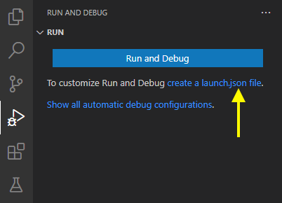
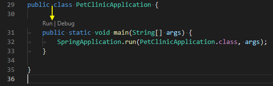
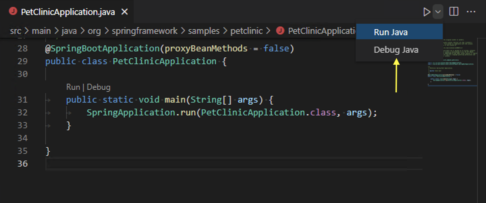
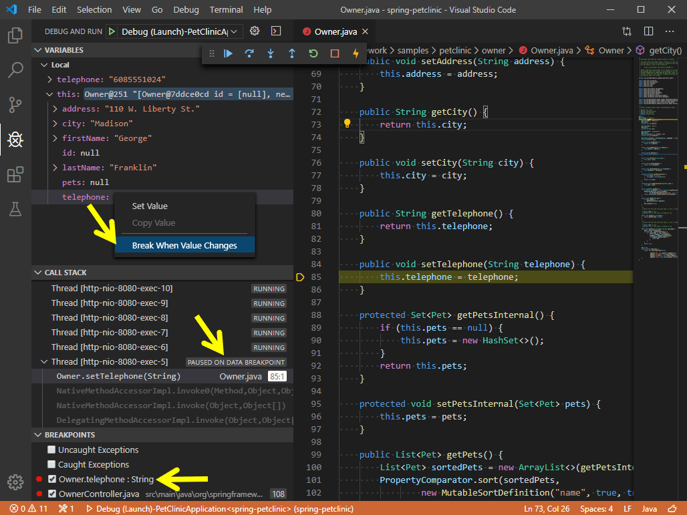

运行和调试 Java
Visual Studio Code 允许你通过 Debugger for Java 扩展来调试 Java 应用程序。它是一个基于 Java Debug Server 的轻量级 Java 调试器，扩展了 Language Support for Java™ by Red Hat。
以下是受支持的调试功能列表：
- 启动/附加
- 断点
- 异常
- 暂停和继续
- 单步跳入/跳出/跳过
- 变量
- 调用堆栈
- 线程
- 调试控制台
- 表达式求值
- 热代码替换
Java 调试器是一个开源项目，欢迎贡献者通过 GitHub 仓库进行协作：
如果你在使用以下功能时遇到任何问题，可以通过提交 issue 与我们联系。
安装
要在 Visual Studio Code 中获得完整的 Java 语言支持，你可以安装 Extension Pack for Java，其中包含 Debugger for Java 扩展。
有关如何开始使用扩展包的详细信息，你可以查阅 Java 入门 教程。
配置
默认情况下，调试器将开箱即用，通过自动查找主类并在内存中生成默认启动配置来启动你的应用程序。
如果你希望自定义并持久化你的启动配置，可以在 运行和调试 视图中选择 创建 launch.json 文件 链接。

launch.json 文件位于你工作区的 .vscode 文件夹（项目根文件夹）中。
有关如何创建 launch.json 的更多详细信息，请阅读 启动配置；有关 Java 配置选项的更多详细信息，你可以阅读 配置选项。
运行和调试
调试器扩展提供了多种运行和调试 Java 应用程序的方式。
从 CodeLens 运行
你可以在 main() 函数的 CodeLens 上找到 运行|调试。

从编辑器菜单运行
另一种开始调试的方式是从顶部编辑器标题栏中选择 运行 Java 或 调试 Java 菜单。

按 F5 运行
按下 kb(workbench.action.debug.start)，调试器将自动找到项目的入口点并开始调试。你也可以从 VS Code 侧边栏的 运行和调试 视图启动调试会话。更多信息请参阅 在 VS Code 中调试。
调试单个文件
除了支持调试由构建工具管理的 Java 项目外，VS Code 还支持在没有任何项目的情况下调试单个 Java 文件。
调试会话输入
VS Code 中的默认调试控制台不支持输入。如果你的程序需要从终端输入，你可以使用 VS Code 中的集成终端（kb(workbench.action.terminal.toggleTerminal)）或外部终端来启动它。你还可以使用用户设置 java.debug.settings.console 为所有 Java 调试会话配置全局控制台。
断点
Debugger for Java 支持多种断点，例如行断点、条件断点、数据断点和日志点。
断点 - 条件断点
借助表达式求值功能，调试器还支持条件断点。你可以设置断点在表达式求值为 true 时中断。
断点 - 数据断点
你可以让调试器在变量值更改时中断。请注意，数据断点只能在调试会话内部设置。这意味着你需要先启动应用程序并在常规断点上中断。然后你可以在 变量 视图中选择一个字段并设置数据断点。

断点 - 日志点
Java 调试器也支持 日志点。日志点允许你在不编辑代码的情况下将输出发送到调试控制台。它们与断点不同，因为它们不会停止你应用程序的执行流程。
断点 - 触发断点
触发断点是一种在另一个断点被命中后自动启用的断点。当诊断仅在某些前提条件之后才会发生的代码故障时，它们非常有用。
可以通过右键单击字形边距，选择 添加触发断点，然后选择启用该断点的其他断点来设置触发断点。
表达式求值
调试器还允许你在 监视 窗口以及调试控制台中求值表达式。
热代码替换
调试器支持的另一个高级功能是"热代码"替换。热代码替换（HCR）是一种调试技术，通过该技术，Debugger for Java 将类更改通过调试通道传输到另一个 Java 虚拟机（JVM）。HCR 有助于实验性开发并培养迭代式的试错编码方式。借助此新功能，你可以启动调试会话并在开发环境中更改 Java 文件，调试器将替换运行中 JVM 中的代码。无需重启，这就是它被称为"热"的原因。以下是如何在 VS Code 中对 Debugger for Java 使用 HCR 的演示。
你可以使用调试设置 java.debug.settings.hotCodeReplace 来控制如何触发热代码替换。可能的设置值为：
manual- 点击工具栏以应用更改（默认）。auto- 编译后自动应用更改。never- 禁用热代码替换。单步筛选
扩展支持单步筛选，用于在调试时过滤掉你不想看到或跳过的类型。借助此功能，你可以在 launch.json 中配置要筛选的包，以便在单步执行时跳过它们。
配置选项
有许多选项和设置可用于配置调试器。例如，使用启动选项可以轻松配置 JVM 参数和环境变量。
请查阅 Language Support for Java™ by Red Hat 扩展的文档，以获取有关设置项目的帮助。
对于许多常用配置，可以在 VS Code Java 调试器配置 中找到示例。该文档解释了 Java 调试器如何自动为你生成配置，以及如果你需要修改它们，如何使用主类、不同参数、环境、附加到其他 Java 进程以及使用更高级的功能。
以下是 Launch 和 Attach 可用的所有配置。有关如何编写 launch.json 文件的更多信息，请参考 调试。
Launch
mainClass（必需）- 程序入口的完全限定类名（例如 [java 模块名/]com.xyz.MainApp）或 Java 文件路径。args- 传递给程序的命令行参数。使用"${command:SpecifyProgramArgs}"来提示输入程序参数。它接受字符串或字符串数组。sourcePaths- 程序的额外源代码目录。调试器默认从项目设置中查找源代码。此选项允许调试器在额外目录中查找源代码。modulePaths- 启动 JVM 的模块路径。如果未指定，调试器将从当前项目自动解析。$Auto- 自动解析当前项目的模块路径。$Runtime- 当前项目 'runtime' 范围内的模块路径。$Test- 当前项目 'test' 范围内的模块路径。!/path/to/exclude- 从模块路径中排除指定路径。/path/to/append- 将指定路径追加到模块路径。
classPaths- 启动 JVM 的类路径。如果未指定，调试器将从当前项目自动解析。$Auto- 自动解析当前项目的类路径。$Runtime- 当前项目 'runtime' 范围内的类路径。$Test- 当前项目 'test' 范围内的类路径。!/path/to/exclude- 从类路径中排除指定路径。/path/to/append- 将指定路径追加到类路径。
encoding- JVM 的file.encoding设置。如果未指定，将使用 'UTF-8'。可能的值可以在 支持的编码 中找到。vmArgs- JVM 的额外选项和系统属性（例如 -Xms\projectName- 调试器搜索类时首选的 Java 项目。不同项目中可能存在重复的类名。当工作区包含多个 Java 项目时，此设置是必需的，否则表达式求值和条件断点可能无法正常工作。此设置在调试器启动程序时查找指定的主类时也会起作用。cwd- 程序的工作目录。默认为${workspaceFolder}。env- 程序的额外环境变量。envFile- 包含环境变量定义的文件的绝对路径。stopOnEntry- 启动后自动暂停程序。console- 启动程序的指定控制台。如果未指定，则使用由java.debug.settings.console用户设置指定的控制台。internalConsole- VS Code 调试控制台（不支持输入流）。integratedTerminal- VS Code 集成终端。externalTerminal- 可在用户设置中配置的外部终端。
shortenCommandLine- 当项目具有较长的类路径或较大的 VM 参数时，启动程序的命令行可能会超过操作系统允许的最大命令行字符串限制。此配置项提供了多种缩短命令行的方式。默认为auto。none- 使用标准命令行 'java {options} classname {args}' 启动程序。jarmanifest- 将类路径参数生成到一个临时的 classpath.jar 文件中，并使用命令行 'java -cp classpath.jar classname {args}' 启动程序。argfile- 将类路径参数生成到一个临时的参数文件中，并使用命令行 'java @argfile {args}' 启动程序。此值仅适用于 Java 9 及更高版本。auto- 自动检测命令行长度，并确定是否通过适当的方式缩短命令行。
stepFilters- 单步执行时跳过指定的类或方法。classNameFilters- [已弃用 - 由skipClasses替代] 单步执行时跳过指定的类。类名应为完全限定名。支持通配符。skipClasses- 单步执行时跳过指定的类。你可以使用 '$JDK' 和 '$Libraries' 等内置变量来跳过一组类，或添加特定的类名表达式，例如java.、.Foo。skipSynthetics- 单步执行时跳过合成方法。skipStaticInitializers- 单步执行时跳过静态初始化方法。skipConstructors- 单步执行时跳过构造方法。Attach
hostName（必需）- 远程调试目标的主机名或 IP 地址。port（必需）- 远程调试目标的调试端口。processId- 使用进程选择器选择要附加的进程，或指定整数进程 ID。${command:PickJavaProcess}- 使用进程选择器选择要附加的进程。- 整数 PID - 附加到指定的本地进程。
timeout- 重新连接前的超时值，以毫秒为单位（默认 30000 ms）。sourcePaths- 程序的额外源代码目录。调试器默认从项目设置中查找源代码。此选项允许调试器在额外目录中查找源代码。projectName- 调试器搜索类时首选的 Java 项目。不同项目中可能存在重复的类名。当工作区包含多个 Java 项目时，此设置是必需的，否则表达式求值和条件断点可能无法正常工作。stepFilters- 单步执行时跳过指定的类或方法。classNameFilters- [已弃用 - 由skipClasses替代] 单步执行时跳过指定的类。类名应为完全限定名。支持通配符。skipClasses- 单步执行时跳过指定的类。你可以使用 '$JDK' 和 '$Libraries' 等内置变量来跳过一组类，或添加特定的类名表达式，例如java.、.Foo。skipSynthetics- 单步执行时跳过合成方法。skipStaticInitializers- 单步执行时跳过静态初始化方法。skipConstructors- 单步执行时跳过构造方法。用户设置
java.debug.logLevel：发送到 VS Code 的调试器日志的最低级别，默认为warn。java.debug.settings.showHex：在 变量 中以十六进制格式显示数字，默认为false。java.debug.settings.showStaticVariables：在 变量 中显示静态变量，默认为false。java.debug.settings.showQualifiedNames：在 变量 中显示完全限定类名，默认为false。java.debug.settings.showLogicalStructure：在 变量 中显示集合和 Map 类的逻辑结构，默认为true。java.debug.settings.showToString：在 变量 中为所有重写了 'toString' 方法的类显示 'toString()' 值，默认为true。java.debug.settings.maxStringLength：在 变量 或 调试控制台 中显示的字符串的最大长度。超过此限制的字符串将被截断。默认值为0，表示不执行截断。java.debug.settings.hotCodeReplace：在调试期间重新加载更改的 Java 类，默认为manual。请确保 Java 语言支持扩展 的java.autobuild.enabled未被禁用。有关用法和限制的更多信息，请参阅 热代码替换维基页面。- manual - 点击工具栏以应用更改。
- auto - 编译后自动应用更改。
- never - 永不应用更改。
java.debug.settings.enableHotCodeReplace：为 Java 代码启用热代码替换。请确保 VS Code Java 的自动构建未被禁用。有关用法和限制的更多信息，请参阅 热代码替换维基页面。java.debug.settings.enableRunDebugCodeLens：为主入口点上的运行和调试按钮启用 CodeLens 提供程序，默认为true。java.debug.settings.forceBuildBeforeLaunch：启动 Java 程序之前强制构建工作区，默认为true。java.debug.settings.console：启动 Java 程序的指定控制台，默认为integratedTerminal。如果你希望为特定调试会话自定义控制台，请修改launch.json中的console配置。internalConsole- VS Code 调试控制台（不支持输入流）。integratedTerminal- VS Code 集成终端。externalTerminal- 可在用户设置中配置的外部终端。
java.debug.settings.exceptionBreakpoint.skipClasses：在发生异常中断时跳过指定的类。你可以使用 '$JDK' 和 '$Libraries' 等内置变量来跳过一组类，或添加特定的类名表达式，例如java.、.Foo。java.debug.settings.stepping.skipClasses：单步执行时跳过指定的类。你可以使用 '$JDK' 和 '$Libraries' 等内置变量来跳过一组类，或添加特定的类名表达式，例如java.、.Foo。java.debug.settings.stepping.skipSynthetics：单步执行时跳过合成方法。java.debug.settings.stepping.skipStaticInitializers：单步执行时跳过静态初始化方法。java.debug.settings.stepping.skipConstructors：单步执行时跳过构造方法。java.debug.settings.jdwp.limitOfVariablesPerJdwpRequest：单个 JDWP 请求中可以请求的最大变量或字段数。值越高，展开变量视图时请求调试目标的频率越低。同时，较大的数字可能导致 JDWP 请求超时。默认为 100。java.debug.settings.jdwp.requestTimeout：调试器与目标 JVM 通信时 JDWP 请求的超时时间（毫秒）。默认为 3000。java.debug.settings.vmArgs：启动 Java 程序的默认 VM 参数。例如，使用 '-Xmx1G -ea' 将堆大小增加到 1 GB 并启用断言。如果你希望为特定调试会话自定义 VM 参数，可以修改launch.json中的 'vmArgs' 配置。java.silentNotification：控制是否可以使用通知来报告进度。如果为 true，则改用状态栏报告进度。默认为false。故障排除
如果你在使用调试器时遇到问题，可以在 vscode-java-debug GitHub 仓库 中找到详细的故障排除指南。
常见的解释问题包括：
- Java 语言支持扩展无法启动。
- 构建失败，是否要继续？
- *.java 不在类路径上。仅会报告语法错误。
- 程序错误：无法找到或加载主类 X。
- 程序抛出 ClassNotFoundException。
- 无法完成热代码替换。
- 请在 launch.json 中指定远程调试目标的主机名和端口。
- 求值失败。原因：由于线程已恢复，无法求值。
- 找不到包含 main 方法的类。
- 启动调试器时，vscode.java.startDebugSession 没有对应的 delegateCommandHandler。
- 无法解析类路径。
- 不支持请求类型"X"。仅支持 "launch" 和 "attach"。
反馈与问题
你可以在 vscode-java-debug 仓库中找到完整的问题列表。你可以提交 bug 或功能建议 并参与社区驱动的 vscode-java-debug Gitter 频道。
下一步
继续阅读以了解：
- 调试 - 了解如何在 VS Code 中对任何语言的项目使用调试器。
以及对于 Java：